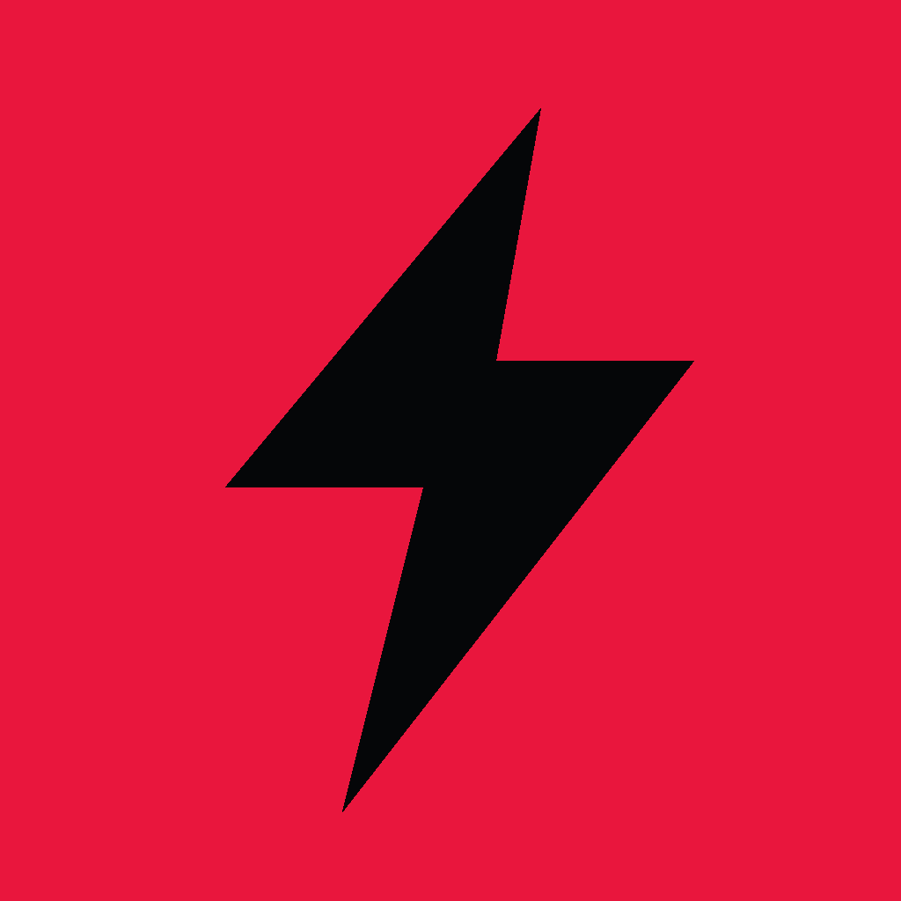
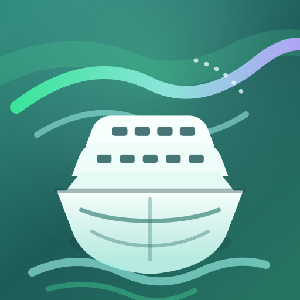

Scorch
Private pilot candidateShareable challenge previews and closest-finish rematches are implemented. Next: physical-device GPS and final legal and security review.
I turn complexity into products people trust, systems made clear, decisions people can use, and stories worth carrying.
I currently lead technical product work inside complex, regulated environments. Through Katsuko, I bring the same discipline to consumer software. I also write speculative fiction and run marathons.
The latest chapter is less about adding features and more about crossing thresholds. Three consumer products now have public identities, disciplined release boundaries, and a clear next gate.
Shareable challenge previews and closest-finish rematches are implemented. Next: physical-device GPS and final legal and security review.
The public site and iOS and Android candidates are in place. Next: real-device push and accessibility QA before public launch.
The public site and internal native build paths are in place. Next: approved live-source coverage, observed planning sessions, and store distribution.
Independent products built under Katsuko, each centered on a sharp human problem and an honest release boundary.
Scorch makes head-to-head running fair across different paces. It turns mapped local routes into scheduled races where each runner gets a pace-based start and the whole field races toward one finish.
Local competition is often club-dependent, pace-matched, or tied to formal race calendars.
I defined the product, designed the athlete journey, built the iOS client and backend, and set the privacy, safety, and launch gates.
I removed cash prizes, payments, cycling, health-data integrations, and broad public claims from the first release so the pilot can prove free, run-only fair-start racing.
Automated integration checks cover the complete free-race lifecycle. Shareable challenge previews, finish-to-rematch recaps, and telemetry recovery are implemented. Physical-device GPS and final legal and security review remain.
As of August 2026, the candidate passes its automated test and release-readiness suites across registration, fair starts, route telemetry, resilient uploads, evidence-backed finishes, review, and results.

HardBeet is designed around explicit daily check-in sharing for independent loved ones. One deliberate tap creates the shared signal, and approved people can see whether the check-in happened.
Only a deliberate tap creates the shared signal. The current app design does not request live-location or private-phone-activity access, and offline check-ins stay visibly unconfirmed until the backend receives them.
Build-readiness evidence: As of August 2026, main passes automated tests plus type-safety, release-readiness, static-site, and secret-scanning gates. Selected access-control and account-deletion paths are covered. The public site is live, and iOS and Android candidates are configured. Real-device push and accessibility QA remain before public launch.

Aurora is a source-policy-aware cruise decision and price-watch product. Cruise Passport and Itinerary Fit turn route history, cabin and party needs, trusted lines, and price thresholds into explainable matches and precise watches.
Recommendations expose route fit, tradeoffs, and confidence before asking someone to watch or act. The current design permits configured, approved sources rather than quietly scraping unsupported paths.
Build evidence: The public site is live, and native app paths are being validated internally. Automated checks cover policy-gated adapters, browser boot, alert logic, persistence, account isolation, and selected security behaviors. Store distribution, approved live-source coverage, and observed planning sessions remain.
I currently lead technical product work in a regulated enterprise environment. The role spans roadmap decisions, cross-functional alignment, and hands-on technical delivery across product, engineering, analytics, risk, and control partners. Selected outcomes are rounded and summarized to protect institutions, systems, and teams.
Led reengineering across selected validation, risk, and change-management workflows.
Built an automated performance-evaluation approach for complex analytical models.
Led API enhancements that expanded adoption across internal product and platform consumers.
Figures are rounded and describe selected completed work. Confidential institutions, platform names, teams, and control details are intentionally omitted.
Product leadership across financial platforms, analytics, API integrations, model risk, and reengineering. The work is to turn high-stakes workflows into decisions people can understand and trust.
Earlier work included a large-scale syndicated-loan platform migration, analytics integration, and web-service delivery across financial and healthcare systems.
New York University · Quantitative modeling, analytics, and optimization
Koç University · Engineering systems and quantitative foundations
Product strategy · Python · SQL · APIs · Cloud systems · Mobile and web delivery
When an evaluator discovers a frontier model translating concepts no human culture has ever named, she must decide what version of humanity to show whatever may be listening on the other side.
The Receiver is a story about first contact through machines. It asks whether authenticity, performance, and our capacity for repair can ever be separated.
A speculative framework that imagines civilizations as living systems whose mature intelligences create self-models: models that might one day become comparable, translatable, or receivable across worlds.

Progress accumulates through preparation, honest feedback, recovery, and return.
I am a marathoner pursuing all six World Marathon Majors. Endurance is not a metaphor added to the brand. It is part of how I learn, make decisions, and keep working when the first plan meets reality.
Complete the six World Marathon Majors through patient, sustainable progress.
Scorch grew from a runner’s question: how can people at different paces still experience a meaningful head-to-head race?
Plan carefully, test honestly, adjust without drama, and return to the work.
I am Can Iseri, a technical product leader, independent builder, writer, and marathoner based in New York. My professional work lives inside regulated financial systems. My independent work ships through Katsuko.
Katsuko is the independent studio behind Scorch, HardBeet, Aurora, and The Receiver. It gives me a place to carry one practice across software and story: make a difficult idea clear enough to use, test, or feel.
I work close to the full arc, from product promise and UX through engineering, privacy boundaries, validation, and release preparation. The medium changes. The standard does not.

I am open to thoughtful conversations about senior technical product leadership, focused advisory work, independent products, and publishing. Tell me what you are working on and what a useful conversation would look like.